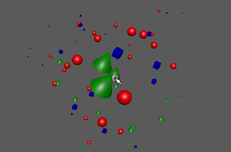

根据连接的影响定位器的缩放和旋转，影响对象实例的缩放和旋转。默认情况下，起始定位器将自动添加到场景中。
影响节点
-
添加影响定位器(Add Influence Locator)
- 将附加的影响定位器添加到场景中。
-
影响力(Influence Power)
- 控制影响定位器的效果在远离半径中心时如何快速衰减。值越高，衰减越明显。
-
使用半径(Use Radius)
- 用于围绕定位器手动调整影响半径(Influence Radius)（效果区域）。禁用后，影响节点将影响整个网络并在任何其他影响定位器之间自动减弱。
-
影响半径(Influence Radius)
- 启用“使用半径”(Use Radius)时定位器的最大影响范围。
-
强度(Strength)
- 同时减弱对所有对象的节点效果。
-
随机强度(Random Strength)
- 按随机顺序平滑地减弱所有对象的节点效果。
-
阶跃强度(Step Strength)
- 每次禁用一个对象的节点效果。
-
启用漩涡(Enable Vortex)
- 激活旋转漩涡效果。
-
启用缩放(Enable Scale)、启用旋转(Enable Rotation)
- 切换影响定位器在各自变换上的效果。
-
覆盖缩放(Overwrite Scale)、旋转旋转(Overwrite Rotation)
- 切换是忽略并覆盖任何传入的缩放或旋转值，还是添加到这些值中。
-
启用平移 X (Enable Translate X)、启用平移 Y (Enable Translate Y)、启用平移 Z (Enable Translate Z)
- 切换影响定位器是否影响各自的位置变换。变换将始终相加（无覆盖）。